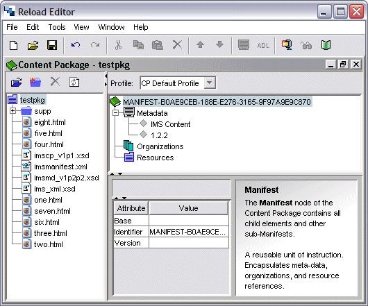
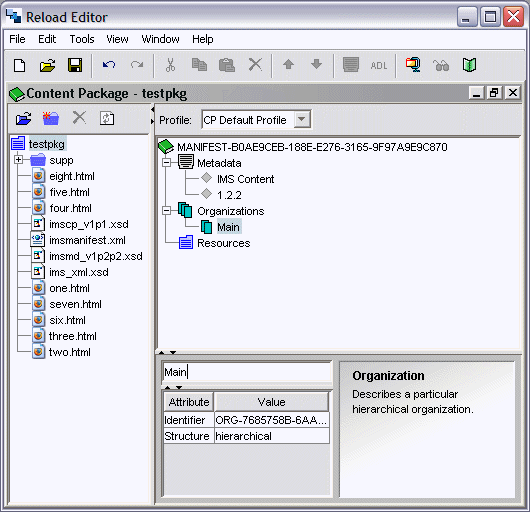
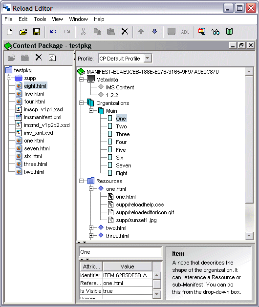

Add Organizations and Items
Now we need to add some content. For our simple content package we have all our content stored in one place, but we need to Import the Resources into our resource pool.
Import Content
To create our content package, we must first import some content.
- From the File Menu, select Import, Import to Resources Pool ... This brings up the Import Resources File Dialogue. Alternatively, click the Icon in the resources pool toolbar. (To ensure that resources are imported to the correct place, click on the root node (testpkg) in the Resources Pane).
- Navigate to the source directory you made earlier (c:\cp\test-src\).
- Select all the files,including the subdirectory.
- Check the 'Include Dependent Files' Option. The RELOAD Editor will parse html files etc. to find images, stylesheets etc.
- Click Open. Click Yes if asked to overwrite files (e.g. stylesheets and logo's which may have been referenced in more than one file).
- The files you imported now appear in the tree view on the left hand side of the RELOAD workspace. You should see the eight .html files in the root space, as well as the supp folder containing the images and stylesheets.
Your workspace should resemble that shown below.

Create an Organisation
A content package consists of one or more organisations of content. By default the CP we create has no organisations, so we have to add one.
- Select the Organizations node in the manifest view and right-click.
- From the context sensitive menu, click 'Add Organization'
- Select the new Organization and, in the attribute pane at the bottom of the workspace, enter the value Main in the white box. This defines this organisation as the default for the package.
Your workspace should resemble that shown below.

Add Items (Content)
Finally, we can add some content to our content package. Basically, we create the structure for our content package by adding Items to an Organization. Adding Items to the organisation can be carried out using menus (Edit, Add Item, or right-click, Add Item) but it is far easier to just 'drag and drop' content from the tree pane to the manifest pane.
Drag and Drop
Moving content around between the three panes and within panes is easy if you use drag and drop. You can easily:
drag and drop Files or Folders from the resources pane to become Resources in the manifest pane
drag and drop Files or Folders from the resources pane to become Items in the manifest pane
drag and drop Folders from the resources pane to become Organizations in the manifest pane
drag and drop Resources in the manifest pane to become Items in the manifest pane
drag and drop from the Desktop to a folder in the resources pane
|
- Select the resource you want to add from the resources node in the manifest pane. You can start with one.html (though you don't have to). .
- Drag the file to the 'Main' Organisations node of the manifest file. A new Item appears, with the title One. When the editor adds content to an organisation it will attempt to provide a sensible name - for instance by parsing the html to read the contents of the file's <title> tag.
- Notice that as you add content to the 'Main' Organizations node, the file (and its' dependents) are added to the Resources node.
- Continue adding content to the 'Main' Organizations node. Don't worry about adding the files in order, if you want to rearrange the order, you can always select individual Items and use the 'Move Up' and 'Move Dn' buttons to reorganise. If your content exists entirely within a folder (not the case here) then you can drag the whole folder across to the Organisations node from the Tree Pane and the whole adding organizations and item process is carried out automatically (you may have to tidy up a little)
- You can also delete content from the organization - select the content and click the delete button. This won't delete files, only references to them in the Content Package.
Once you have finished adding content, your workspace should resemble that shown below.
